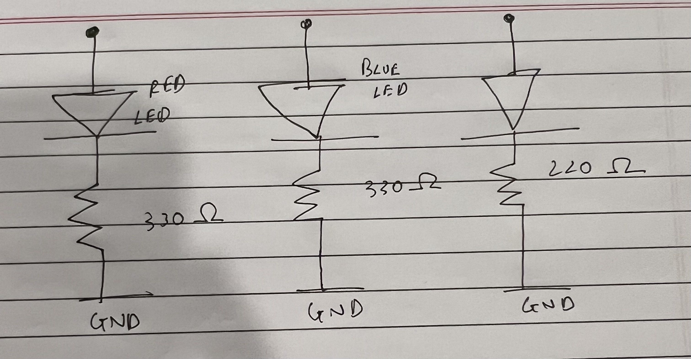
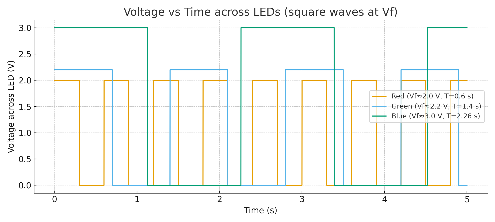

<!-- ===== Media styles (optional, place once in <head> or keep here) ===== -->
<style>
  figure { margin: 1rem 0; }
  figcaption { color:#6b7280; font-size:.95rem; margin-top:.25rem }
  .media-grid { display:grid; gap:12px; grid-template-columns: 1fr; }
  @media (min-width: 720px){ .media-grid { grid-template-columns: 1fr 1fr; } }
</style>

<section>
  <h2>The Schematic & Circuit Media</h2>

  <!-- Hand-drawn schematic -->
  <figure>
    
    <figcaption>My hand-drawn wiring: LEDs on pins 3/5/6 through 330 Ω to GND; button on D8 → GND (INPUT_PULLUP).</figcaption>
  </figure>

  <!-- Your real breadboard photo + an animated GIF of the fade -->
  <div class="media-grid">
    <figure>
      
      <figcaption>Photo of my built circuit (same wiring as the schematic).</figcaption>
    </figure>

    <!-- Use a GIF if you have it; or fall back to an MP4 video -->
    <figure>
      <!-- If you have a GIF: -->
      
      <!-- If you only have MP4 instead, comment the line above and use: 
      <video src="fade_demo.mp4" autoplay loop muted playsinline style="max-width:100%; border-radius:10px;"></video>
      -->
      <figcaption>Animated demo of the synced fade.</figcaption>
    </figure>
  </div>
</section>

<section>
  <h2>Why 330 Ω? (Current-limit calculations)</h2>
  <p>I used <strong>330 Ω</strong> resistors on each LED to limit current from a 5 V Arduino pin. With typical LED forward voltages:</p>
  <ul>
    <li>Red (≈2.0 V): \( I = \frac{5 - 2.0}{330} \approx 9.1 \text{ mA} \)</li>
    <li>Green (≈2.2 V): \( I = \frac{5 - 2.2}{330} \approx 8.5 \text{ mA} \)</li>
    <li>Blue (≈3.0 V): \( I = \frac{5 - 3.0}{330} \approx 6.1 \text{ mA} \)</li>
  </ul>
  <p>All are well under the ~20 mA per-pin guideline and bright enough, so 330 Ω is a safe, conservative choice.</p>

  <p><strong>Why use <code>INPUT_PULLUP</code>?</strong> It provides an internal ~20–50 kΩ pull-up so the button reads HIGH when idle and LOW when pressed. When pressed, current is only about \( \frac{5\text{ V}}{30\text{ k}\Omega} \approx 0.17 \text{ mA} \), so no extra resistor is needed.</p>
</section>

<section>
  <h2>Additional Questions</h2>

  <h3>1) Voltage vs. time chart</h3>
  <p>Voltage across an LED for <code>analogWrite(led, 64)</code>, <code>128</code>, and <code>255</code> (conceptual PWM):</p>
  

  <h3>2) Battery life with a 1200 mAh battery (LEDs only)</h3>
  <p>Using the 330 Ω currents above:</p>
  <ul>
    <li><strong>All-On (255 on all 3):</strong> total ≈ 9.1+8.5+6.1 ≈ <strong>23.6 mA</strong> → \( \frac{1200}{23.6} \approx \) <strong>51 hours</strong></li>
    <li><strong>Fade (≈50% average each):</strong> ≈ 11.8 mA → \( \approx \) <strong>102 hours</strong></li>
    <li><strong>Chase (one LED ON at a time):</strong> ≈ 9.1 mA → \( \approx \) <strong>132 hours</strong></li>
  </ul>
  <p class="muted">Note: This ignores the Arduino Uno’s own draw (~40–60 mA), which would shorten real runtimes.</p>

  <h3>3) Measured LED voltage</h3>
  <p><em>Replace with your real DMM reading:</em> I measured Red at <strong>1.98 V</strong> when ON. Theoretical was ~2.0 V → ~−1% difference (normal part/meter tolerance).</p>

  <h3>4) AI tools usage</h3>
  <p>I used ChatGPT to help debug <code>INPUT_PULLUP</code> wiring, write non-blocking fade + button code, make a clear schematic, and generate the PWM plot. I verified everything on my breadboard.</p>
</section>
